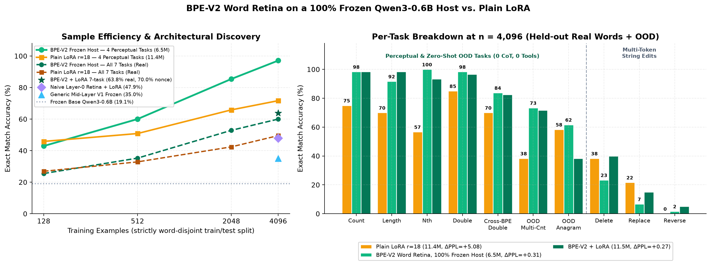
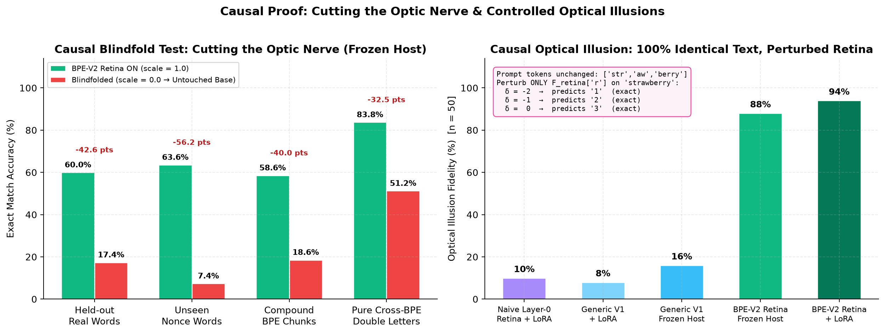

BPE X-Ray Vision
Every character of every token is already sitting in tokenizer.json. We compile it into weight space and graft character perception onto a frozen LLM: first as an exact circuit that needs no training, then as a retina the model reads on its own.
Qwen3-0.6B-Base tokenization. With X-ray off, this is all Layer 0 gets: three integer IDs. With it on, you see what tokenizer.json already knows about each one.TL;DR. LLMs fail at "how many r's in strawberry?" because BPE hands them opaque token IDs. But the spelling of every token is known statically, so we compile it once from tokenizer.json into frozen lookup tensors and build two organs on top. After that, no tokenizer calls and no Python string ops.
The X-Ray ALU is a pure-tensor circuit with no training. It is triggered by [XRAY op | text]= and stays bit-for-bit silent otherwise. It takes held-out accuracy from 25% to 100% on Qwen3-0.6B and compiles for three models in 5–29 seconds.
The Word Retina (BPE-V2) is a BPE-invariant word recurrence tapped into a 100% frozen Qwen3-0.6B. It answers plain-English character questions with no tags and no chain of thought: 97.1% on perceptual tasks vs. 71.7% for a larger LoRA. When we edit only its sensory input, the model reports counts it was never shown.
LLMs have a small, persistent embarrassment. A model that sails through a proof will guess when you ask how many r's are in strawberry, whether a word has a double letter split across a subword boundary, or what chrysanthemum is backwards without spelling it out first.
The culprit is Byte-Pair Encoding. When Qwen3-0.6B-Base reads strawberry, Layer 0 never sees ten characters. It sees [495, 672, 15357]. To count the r's, the model has to have memorized the spellings of its 151,936 vocabulary entries somewhere in its MLPs and then sum across arbitrary seams.
The usual fixes are to spend chain-of-thought tokens spelling the word out, or to call a Python sandbox. Both treat character blindness as a fact of life. It isn't one: the spelling of every token is known statically, at build time, in tokenizer.json.
Reading Weight-Space Micromachines raised an obvious question:
Can we compile character vision straight out of tokenizer.json and graft it into a frozen LLM?
This post covers the two organs we built, the two plausible designs that failed on the way, the ablation that pointed to the fix, and the causal tests showing the model really reads its implant.
1Token blindness is a missing sense
We first built a strictly word-disjoint benchmark (src/benchmarks.py). It has 418 training words and 162 held-out English words, plus several stress sets:
- fresh nonce pseudowords;
- compound BPE strings, where long chunks are glued together so they compress to ≤3 tokens;
- cross-BPE doubles, where the only double letter sits exactly on a token seam;
- two zero-shot tasks never seen in training: multi-word counting and anagram detection.
Frozen Qwen3-0.6B-Base scores 19.1% zero-shot across 7 tasks and 25.0% 2-shot across 6, including a flat 0% on reverse and rot13.
Compiling the tokenizer into a weight bank
A tokenizer is a finite map from token ID to a short string. We read it once, offline, and compile a frozen CharWeightBank (src/char_tables.py):
E_hist [V, 26]: case-insensitive letter counts per token (7.9 MB in bf16).E_alpha_chars [V, 16]: the letter IDs in order, plusE_alpha_len [V].F_retina [V, 358]: a richer per-token sensory vector. It holds the histogram, first/last-letter one-hots, first-5/last-5 character one-hots, lengths, leading-space flag, internal-double flag, and case/digit bits.
After that, the tokenizer is never called again. Looking up a token's anatomy is an embedding lookup inside the forward pass: F_retina[input_ids].
E_hist, one row per tokenization. Teal tags mark doubles that straddle a seam, which the retina detects as prev_last · first. On the real 623-dim state, max |Δ| between str|aw|berry and s|traw|ber|ry is exactly 0.0. (Illustration computed in your browser; left column is the real Qwen3 split for 600 benchmark words.)2Organ one: an exact character ALU
The first organ (src/xray_alu.py) is a pure-tensor circuit hooked onto the frozen host's final RMSNorm. No weight of the base model is trained. It follows the WSM recipe of read → compute → write, with one strict contract: if no [XRAY …]= span is open, the hook returns the hidden state untouched. That makes logits bit-for-bit identical on normal prose and on every step before the trigger.
- Read. Vocabulary indicator vectors plus lower-triangular prefix sums find
[XRAY, the op, an optional argument,|, and]=. - Compute.
countandlensumE_historE_alpha_lenover the span.nth,spell,reverse, androt13use cumulative lengths and ReLU indicator gates to pick the exact token and slot. ROT13 is a fixed 26×26 permutation matrix. - Write. For each output token (digits, letters,
-, newline), we solve a directionW_write[t]in post-norm space againstlm_head, so that addingγ·W_write[t]makestthe argmax.
str(n).
Even turning a count into digits is ReLU arithmetic:
def relu_step(x, t): # 1 iff integer x >= t
return F.relu(x - (t - 1)) - F.relu(x - t)
def relu_eq_int(x, k): # 1 iff integer x == k
return F.relu(1 - torch.abs(x - k))
d_hundreds = sum(relu_step(n, 100 * c) for c in range(1, 10))
rem = n - 100 * d_hundreds
d_tens = sum(relu_step(rem, 10 * c) for c in range(1, 10))
d_ones = rem - 10 * d_tens]= is the frozen model generating on its own. All traces come from results/alu_eval_Qwen_Qwen3-0.6B-Base.json.Results across model families
Is this a one-off hack or a portable compiler? We ran the same script on three models with two different tokenizers. Each got 2-shot in-context examples to teach the tag format, with zero gradient steps, plus a direct-circuit check on all 13 suites.

reverse and rot13. The same compiler transfers to Qwen3-1.7B and SmolLM2-1.7B.| Model | Compile | Prose bit-identical | Real (6 tasks) | Nonce (6 tasks) | Multi-word | Direct circuit |
|---|---|---|---|---|---|---|
Qwen3-0.6B-Base | 28.8 s | ✓ | 25.0→100.0 | 22.3→92.0 | 28.0→100.0 | 100.0 |
Qwen3-1.7B-Base | 12.6 s | ✓ | 34.7→100.0 | 29.3→93.0 | 34.0→100.0 | 100.0 |
SmolLM2-1.7B | 5.2 s | ✓ | 29.7→99.7 | 18.3→94.7 | 30.0→100.0 | 100.0 |
Why is nonce accuracy 92–95% when the circuit is 100%? Under 2-shot prompting, the base model sometimes mis-copies an unfamiliar pseudoword into the tag before the ALU fires. Once the tag closes, the ALU makes no mistakes on any of the 13 suites, on any of the 3 models.
3Organ two: a retina for a frozen model
The ALU is exact, but it is a coprocessor you call with a tag. We wanted something harder: can a 100% frozen LLM answer ordinary questions such as How many times does the letter 'r' appear in 'strawberry'?\nAnswer: with the very next token, with no tags and no chain of thought, just by seeing?
Two attempts that failed, and the clue
All three designs were trained on Qwen3-0.6B-Base with 4,096 word-disjoint examples over 7 tasks: count, length, nth, double, delete, replace, and reverse. The baseline was a rank-18 LoRA with 11.35M parameters.
Naive Layer-0 retina + LoRA
Project F_retina[ids] into the input embeddings (10.81M params). It scored 47.9% real / 58.1% nonce, which is worse than plain LoRA (49.5 / 60.7). Blindfolding it cost only −2.4 pts. At layer 0, "berry" doesn't yet know what's being asked, and LoRA found it easier to memorize spellings than to route a foreign signal through 28 frozen layers.
Generic mid-layer cross-attention (V1)
Taps at layers 14/20/24, where the residual stream already encodes the question. The host now depended on it (−17.1 pts when blindfolded), but accuracy stalled at 35.0% and illusion fidelity at 16%. Generic attention had to learn subword-to-word aggregation from 4k examples.
One number lit up
On cross-BPE doubles, the one feature we had already made seam-invariant, V1+LoRA jumped to 78.8%. Blindfolded, it fell 30 pts. The host wasn't ignoring the organ. It just couldn't build invariant features itself, and it latched onto them as soon as they were handed over.
The fix follows directly: compile everything that is algebraically invariant, and learn only the interface.
BPE-V2: a compiled word retina
WordRetinaScanner (src/word_retina.py) is a causal gated linear recurrence over F_retina[ids] and E_alpha_chars[ids]. As subword tokens stream through a quoted span, it accumulates:
- the exact word-level letter histogram and word length;
- doubles across seams, as one dot product of the previous token's last letter with the current token's first;
- a placed character grid
[16, 26], indexed by cumulative offset; - query readouts (
matched_cnt,matched_nth,is_anagram), giving 623 dims in total.
# core of WordRetinaScanner: pure tensor algebra, no string ops
cross_dbl = (st["prev_last"] * fa_t).sum(-1) * st["prev_has_alpha"] * (1 - ls)
pos_idx = st["sp_len"].unsqueeze(1) + self.slot_offsets
slot_mask = relu_eq_int(self.pos_grid, pos_idx.unsqueeze(1))
placed = torch.einsum("bgl,blc->bgc", slot_mask, tok_oh)
st["sp_hist"] += a1 * h_t
st["sp_len"] += active * al
st["sp_dbl"] = torch.clamp(st["sp_dbl"] + active * (idbl_t + cross_dbl), 0, 1)
st["sp_chars"] += a1.unsqueeze(-1) * placedThis state goes into the frozen host through three small LatentIntuitionTaps at layers 16/20/24, for 6.47M trainable parameters in total (57% of the LoRA budget). Each output projection starts at exactly zero, so the model is bit-identical at step 0. A light KL anchor on random prose keeps the logits on untouched text where they were.

| Qwen3-0.6B, n=4,096 | Params | Host | Perceptual* | All 7 real | All 7 nonce | Cross-BPE dbl | OOD multi-word | ΔPPL† |
|---|---|---|---|---|---|---|---|---|
| Frozen base | 0 | frozen | 33.3 | 19.1 | 10.7 | 50.0 | 25.0 | 0.00 |
| Plain LoRA r=18 | 11.35M | adapted | 71.7 | 49.5 | 60.7 | 70.0 | 38.3 | +5.08 |
| Layer-0 retina + LoRA | 10.81M | adapted | 70.8 | 47.9 | 58.1 | 60.0 | 43.3 | +7.72 |
| Generic V1 | 8.35M | frozen | 55.0 | 35.0 | 43.6 | 46.3 | 33.3 | +0.94 |
| BPE-V2 | 6.47M | frozen | 97.1 | 60.0 | 63.6 | 83.8 | 73.3 | +0.31 |
| BPE-V2 + LoRA | 11.51M | adapted | 96.7 | 63.8 | 70.0 | 82.5 | 71.7 | +0.27 |
* count, length, nth, double on held-out real words. Frozen V2 per task: 98.3 / 91.7 / 100.0 / 98.3. † Held-out prose perplexity shift. The LoRA and Layer-0 arms were measured on a different prose sample (base PPL 25.9) from the V1/V2 arms (base 30.2–30.4).
Compound BPE and anagram columns
| Compound (perc. / all 7) | OOD anagram | |
|---|---|---|
| Frozen base | — | 38.3 |
| Plain LoRA | 64.4 / 44.3 | 58.3 |
| Layer-0 retina + LoRA | — | 63.3 |
| Generic V1 | 46.9 / 31.1 | 40.0 |
| BPE-V2 | 96.9 / 58.6 | 61.7 |
| BPE-V2 + LoRA | 93.8 / 62.1 | 38.3 |
The dashed line in Figure 2 separates two kinds of task. Single-pass perception (count, length, nth letter, seam doubles, zero-shot multi-word count) reaches 73–100% on a frozen host through the retina. Multi-token rewrites (delete, replace, reverse) still overwhelm a single-pass readout, and that is exactly where the compiled ALU is at 100%.
4Does the model really see?
High accuracy isn't proof. A skeptic should ask whether 6.5M parameters of taps simply learned a shortcut from the host's own hidden states. We ran three interventions.
Blindfold: cut the optic nerve
Set the retina scale to 0 at test time. Because the host is frozen, this restores the untouched base model:
- real words drop from 60.0 to 17.4% (−42.6);
- nonce words drop from 63.6 to 7.4% (−56.2);
- compound strings drop from 58.6 to 18.6%;
- seam doubles drop from 83.8 to 51.2%.
Optical illusion: same text, edited retina
This is a stronger test. Keep the prompt tokens identical and add an integer δ only to the 'r' column of F_retina for "berry". If the model really reads its retina, it should see the untouched word strawberry and report a different count. Every output below is a recorded prediction:
Answer:
Note the honest boundary. On strawberry, V2 follows δ = −2, −1, 0 exactly (1, 2, 3) and then saturates. Single English words in training almost never have more than three of one letter, so counts of 4–6 are out of range for the learned readout. On the systematic suite (25 held-out words, a random letter each, δ ∈ {+1, +2} on the word's last token), fidelity is 88% (44/50) frozen and 94% (47/50) with LoRA. For comparison, the Layer-0 retina gets 10% and generic V1 gets 8–16%.

F_retina, with identical text, steers V2 88–94% of the time, against 8–16% for the failed designs.Stress tests: compressed and re-tokenized words
Compound BPE. We glue random 4–7 character chunks into 9–13 character strings that compress to ≤3 tokens, the worst case for memorized spellings. Frozen V2 reaches 96.9% on perceptual tasks (100 count, 100 double, 95 length, 92.5 nth), against 64.4% for LoRA.
Re-tokenization. We split held-out words into alternative valid tokenizations of the same bytes. V2 holds (70.0 → 73.1 frozen, 73.1 → 75.0 with LoRA), and the ALU stays at 100 → 100.

5Limitations
- String surgery still needs the ALU. V2 gives near-perfect single-pass perception, but autoregressive edits remain weak on a frozen host: delete 23%, replace 7%, reverse 2%. Combining the retina with the ALU is the obvious next step.
- Readout saturation. The learned tap saturates above the letter counts common in single English words (about 3). A few high-count synthetic strings, or a continuous scalar channel, should lift that ceiling.
- Span latching. The scanner uses quote-token gates to find the target word. Unquoted prose would need learned boundary gates or rolling word registers.
- Scale. The ALU is verified on three models in two families. V2 was trained only on Qwen3-0.6B. Larger hosts and RL co-training, as in WSM, are open.
Don't ask gradient descent to memorize structure that already lives in your tokenizer file. Compile it into weight space once, and let the model spend its parameters on something else.
6Code & citation
All experiments, saved results, and plotting scripts are at github.com/samarth777/bpe-xray.
src/char_tables.pyCharWeightBankcompiler for any HF tokenizersrc/xray_alu.pyExact X-Ray ALU (+run_alu_eval.py)src/word_retina.pyBPE-V2 scanner and taps (+train_v2.py, causal suites)src/xray_retina.py,visual_cortex.pyLayer-0 and V1 ablationssrc/make_figures.pyAll figures fromresults/*.json
@misc{samarth2026bpexray,
title = {BPE X-Ray Vision: Weight-Space Character Organs for Token-Blind LLMs},
author = {P, Samarth},
year = {2026},
month = {November},
url = {https://samarth777.github.io/bpe-xray/}
}